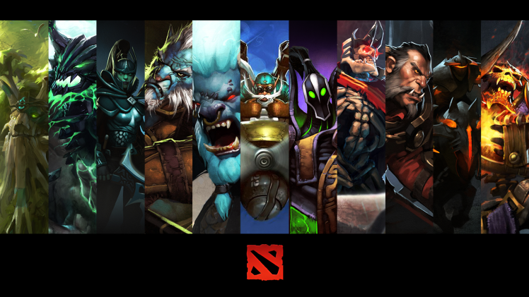

Dota 2 is a 2013 multiplayer online battle arena (MOBA) video game by Valve. The game is a sequel to Defense of the Ancients (DotA), a community-created mod for Blizzard Entertainment's Warcraft III: Reign of Chaos. Dota 2 is played in matches between two teams of five players, with each team occupying and defending their own separate base on the map. Each of the ten players independently controls a powerful character known as a "hero" that all have unique abilities and differing styles of play. During a match players collect experience points and items for their heroes to successfully defeat the opposing team's heroes in player versus player combat. A team wins by being the first to destroy the other team's "Ancient", a large structure located within their base.